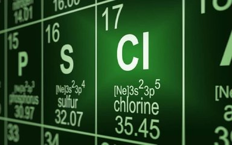

Hóa trị

Image source: Topic 4 sources
| Vietnamese | Hóa trị |
|---|---|
| English | Valence / Valency |
| Pronunciation | /ˈveɪ.lənsi/ |
| Word type | Noun |
Meaning (Vietnamese)
Khả năng liên kết của một nguyên tử hay nhóm nguyên tử, được xác định bằng số electron mà nguyên tử đó có thể góp chung, cho hoặc nhận.
Meaning (English)
The combining capacity of an atom or group of atoms, determined by the number of electrons it can gain, lose, or share.
Example
Carbon has a valency of four in methane
Carbon có hóa trị IV trong metan
Another definition from the notes
The combining capacity of an atom or group determined by electrons shared, gained, or lost.
Source missing